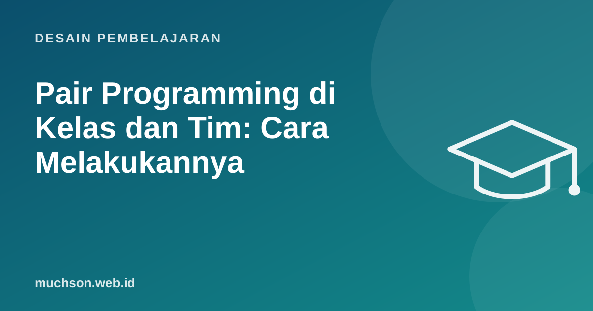

Beranda › Artikel › Desain Pembelajaran
Desain PembelajaranPair Programming di Kelas dan Tim: Cara Melakukannya
Dua orang, satu komputer, satu masalah. Kedengarannya boros, tetapi pair programming berulang kali terbukti membantu, terutama dalam pendidikan. Studi di University of California, Santa Cruz menemukan mahasiswa yang berpasangan lebih mungkin bertahan di mata kuliah pemrograman sampai ujian akhir dan lebih percaya diri dengan solusinya.

Dua peran yang bergantian
Kuncinya adalah bergantian, misalnya setiap 15-25 menit atau setiap selesai satu tes. Tanpa pergantian, satu orang bekerja dan satu orang menonton.
Apa kata penelitian
- McDowell dkk. (2006) di UC Santa Cruz: mahasiswa yang berpasangan lebih mungkin bertahan sampai ujian akhir, lebih menikmati tugas, dan lebih percaya diri; kesenjangan kepercayaan diri antara mahasiswa perempuan dan laki-laki mengecil. Ujian tetap dikerjakan sendiri, dan nilai ujian mereka tidak lebih rendah.
- Di industri, hasilnya lebih bervariasi: pairing cenderung menghasilkan lebih sedikit cacat dan berbagi pengetahuan lebih baik, dengan biaya waktu tambahan. Paling bermanfaat untuk tugas rumit dan anggota baru.
Menerapkan di kelas
- Jelaskan perannya di awal dan tempel di layar.
- Pasangkan dengan sengaja: kemampuan yang tidak terlalu jauh berbeda biasanya berjalan lebih baik.
- Ganti pasangan setiap beberapa minggu agar semua belajar bekerja dengan orang berbeda.
- Nilai individu tetap ada lewat kuis atau ujian mandiri.
- Minta refleksi singkat: "Apa yang dipelajari dari pasanganmu hari ini?"
Masalah umum dan solusinya
Pairing jarak jauh
- Gunakan alat berbagi editor seperti VS Code Live Share, atau berbagi layar dengan kontrol jarak jauh.
- Kamera menyala membantu membaca ekspresi pasangan.
- Lebih sering bertanya "masih bersama?" karena isyarat nonverbal berkurang.
- Untuk tim, pola "mob programming" (seluruh tim, satu driver bergiliran) berguna untuk masalah sulit.
Bagaimana dengan pairing bersama AI?
Asisten coding AI bisa menjadi "navigator" yang selalu ada: menyarankan kode, menjelaskan error. Tetapi AI tidak menggantikan manfaat sosial pairing: belajar cara berpikir orang lain, membangun kepercayaan diri, dan pengetahuan bersama di tim. Untuk pemula, pairing dengan manusia tetap lebih disarankan, dengan AI sebagai alat yang dipakai bersama.
Tanya jawab
Apakah pairing membuat pekerjaan dua kali lebih lama?
Bagaimana menilai tugas yang dikerjakan berpasangan?
Apakah cocok untuk anak?
Sumber dan bacaan lanjut
- McDowell, Werner, Bullock, Fernald (2006): Pair programming improves student retention, confidence, and program quality, CACM
- Martin Fowler: On Pair Programming (Böckeler dan Siessegger)
- VS Code Live Share